Aplicación 2.1 (Estimación MCO y contrastes de hipótesis): Modelo CAPM para las acciones del Banco Santander
En esta aplicación se estimará una versión simple del modelo CAPM para las acciones del Banco Santander:
\[erSAN_{t} = \beta_{1} + \beta_{2}\, erIBEX_{t} + e_{t}\]
donde erSAN representa el exceso de rendimiento de las acciones del Banco Santander, definido como la diferencia entre la rentabilidad de las acciones del banco y la rentabilidad de un activo libre de riesgo, en nuestro caso las letras del tesoro, y erIBEX es el exceso de rendimiento del mercado, representado por el índice IBEX35 de la bolsa española.
Como ejercicio, se pueden repetir todos los cálculos de la aplicación para analizar las empresas Telefónica e Inditex, cuyos datos están contenidos en el fichero de usado en la aplicación.
Código R
# Lectura de librerías
library(tidyverse)
# Lectura de datos
CAPM_ESP <- read_delim("data/CAPM_ESP.csv", delim = ";")
head(CAPM_ESP)# A tibble: 6 × 6
date P_INDITEX P_SANTANDER P_TELEFONICA P_IBEX35 R_LT1Y
<date> <dbl> <dbl> <dbl> <dbl> <dbl>
1 2001-05-22 2.94 6.55 14.1 9543. 4.54
2 2001-06-22 3.75 6.26 11.5 9602. 4.25
3 2001-07-22 3.61 5.76 10.5 8788. 4.12
4 2001-08-22 3.86 5.81 9.81 8565. 4.09
5 2001-09-22 3.06 4.08 8.67 8117. 3.84
6 2001-10-22 3.88 5.32 10.0 7169. 3.28tail(CAPM_ESP)# A tibble: 6 × 6
date P_INDITEX P_SANTANDER P_TELEFONICA P_IBEX35 R_LT1Y
<date> <dbl> <dbl> <dbl> <dbl> <dbl>
1 2017-08-22 33.7 5.44 9.16 10658. -0.41
2 2017-09-22 31.9 5.70 9.05 10180. -0.37
3 2017-10-22 31.0 5.6 8.86 10215. -0.35
4 2017-11-22 29.3 5.50 8.50 10358. -0.38
5 2017-12-22 29.6 5.59 8.26 10211. -0.37
6 2018-01-22 28.7 6.03 8.42 10411. -0.48# Transformación de variables
CAPM_ESP$r_SAN = c(NA,100*diff(log(CAPM_ESP$P_SANTANDER)))
CAPM_ESP$r_IBEX = c(NA,100*diff(log(CAPM_ESP$P_IBEX35)))
CAPM_ESP$r_LT1Y = CAPM_ESP$R_LT1Y/12
CAPM_ESP$er_SAN = CAPM_ESP$r_SAN - CAPM_ESP$r_LT1Y
CAPM_ESP$er_IBEX = CAPM_ESP$r_IBEX - CAPM_ESP$r_LT1Y
# Formato de series temporales
ts_CAPM_ESP <- ts(CAPM_ESP,
start = c(2001,5),
end = c(2018,1),
frequency = 12)
# Algunas gráficas de las variables básicas del modelo
ts.plot(ts_CAPM_ESP[,"P_IBEX35"])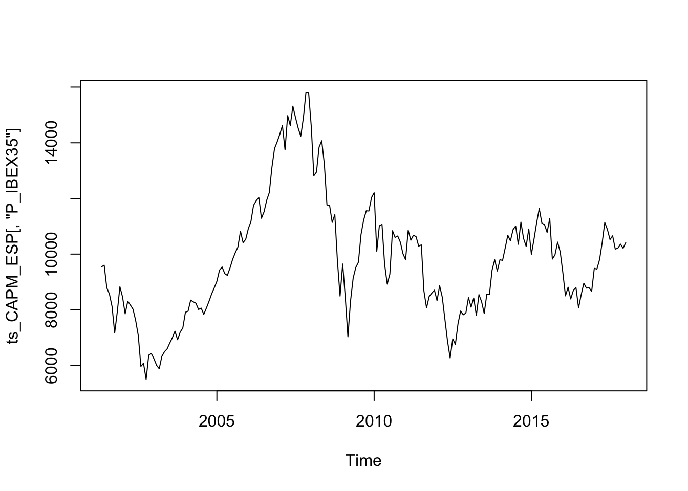
ts.plot(ts_CAPM_ESP[,"P_SANTANDER"])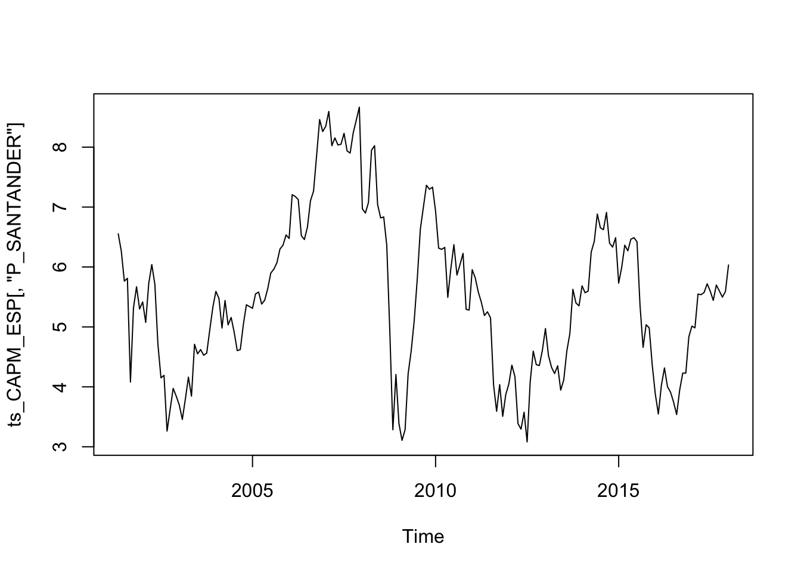
ts.plot(ts_CAPM_ESP[,"er_SAN"],ts_CAPM_ESP[,"er_IBEX"])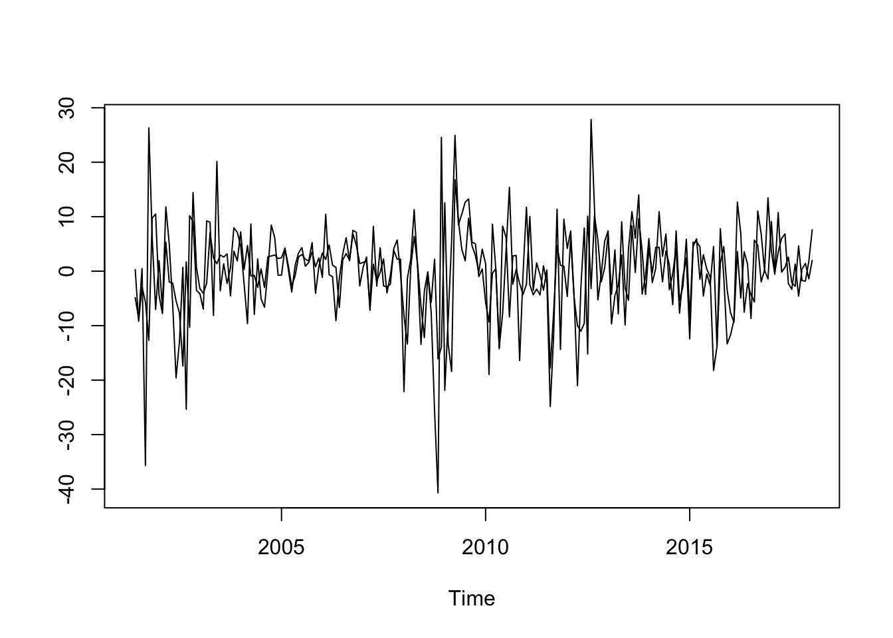
# Modelo CAPM para las acciones del Banco Santander
CAPM_SANTANDER <- lm(er_SAN ~ er_IBEX, data = ts_CAPM_ESP)
summary(CAPM_SANTANDER)
Call:
lm(formula = er_SAN ~ er_IBEX, data = ts_CAPM_ESP)
Residuals:
Min 1Q Median 3Q Max
-33.114 -3.816 0.342 4.659 32.331
Coefficients:
Estimate Std. Error t value Pr(>|t|)
(Intercept) -0.1461 0.6464 -0.226 0.821
er_IBEX 0.4632 0.1016 4.558 9.03e-06 ***
---
Signif. codes: 0 '***' 0.001 '**' 0.01 '*' 0.05 '.' 0.1 ' ' 1
Residual standard error: 9.14 on 198 degrees of freedom
(1 observation deleted due to missingness)
Multiple R-squared: 0.09496, Adjusted R-squared: 0.09039
F-statistic: 20.77 on 1 and 198 DF, p-value: 9.03e-06# Intervalos de confianza para los parámetros estructurales del modelo
# Cálculo de forma 'manual'
alpha <- 0.05
df <- df.residual(CAPM_SANTANDER) # grados de libertad
t_c <- qt(1-alpha/2, df)
b1 <- coef(CAPM_SANTANDER)[[1]] # estimación del parámetro beta1
b1[1] -0.1461435seb1 <- sqrt(vcov(CAPM_SANTANDER)[1,1]) # eest. desviación típica beta1
seb1[1] 0.6463839inf_b1 <- b1-t_c*seb1 # cota inferior
sup_b1 <- b1+t_c*seb1 # cota superior
inf_b1 ; sup_b1[1] -1.420824[1] 1.128537b2 <- coef(CAPM_SANTANDER)[[2]] # estimación del parámetro beta2
b2[1] 0.4632261seb2 <- sqrt(vcov(CAPM_SANTANDER)[2,2]) # est. desviación típica beta2
seb2[1] 0.1016302inf_b2 <- b2-t_c*seb2 # cota inferior
sup_b2 <- b2+t_c*seb2 # cota superior
inf_b2 ; sup_b2[1] 0.2628095[1] 0.6636427# Cálculo automático
confint(CAPM_SANTANDER) 2.5 % 97.5 %
(Intercept) -1.4208239 1.1285369
er_IBEX 0.2628095 0.6636427# Ajuste del modelo (R^2) y ANOVA
s_CAPM_SANTANDER <- summary(CAPM_SANTANDER)
print(s_CAPM_SANTANDER)
Call:
lm(formula = er_SAN ~ er_IBEX, data = ts_CAPM_ESP)
Residuals:
Min 1Q Median 3Q Max
-33.114 -3.816 0.342 4.659 32.331
Coefficients:
Estimate Std. Error t value Pr(>|t|)
(Intercept) -0.1461 0.6464 -0.226 0.821
er_IBEX 0.4632 0.1016 4.558 9.03e-06 ***
---
Signif. codes: 0 '***' 0.001 '**' 0.01 '*' 0.05 '.' 0.1 ' ' 1
Residual standard error: 9.14 on 198 degrees of freedom
(1 observation deleted due to missingness)
Multiple R-squared: 0.09496, Adjusted R-squared: 0.09039
F-statistic: 20.77 on 1 and 198 DF, p-value: 9.03e-06names(s_CAPM_SANTANDER) [1] "call" "terms" "residuals" "coefficients"
[5] "aliased" "sigma" "df" "r.squared"
[9] "adj.r.squared" "fstatistic" "cov.unscaled" "na.action" R2 <- s_CAPM_SANTANDER$r.squared
R2[1] 0.0949604anova(CAPM_SANTANDER)Analysis of Variance Table
Response: er_SAN
Df Sum Sq Mean Sq F value Pr(>F)
er_IBEX 1 1735.4 1735.45 20.775 9.03e-06 ***
Residuals 198 16540.0 83.54
---
Signif. codes: 0 '***' 0.001 '**' 0.01 '*' 0.05 '.' 0.1 ' ' 1# Número de obsevaciones
T <- nobs(CAPM_SANTANDER)
T[1] 200# Número de parámetros
K <- T-df
K[1] 2# Estadístico F de significación global
F_0 <- (R2/(K-1))/((1-R2)/(T-K))
F_0[1] 20.77496# Residuos del modelo
res <- s_CAPM_SANTANDER$residuals
res <- ts(res, start=c(2001,5), end = c(2018,1), frequency = 12)
plot(res)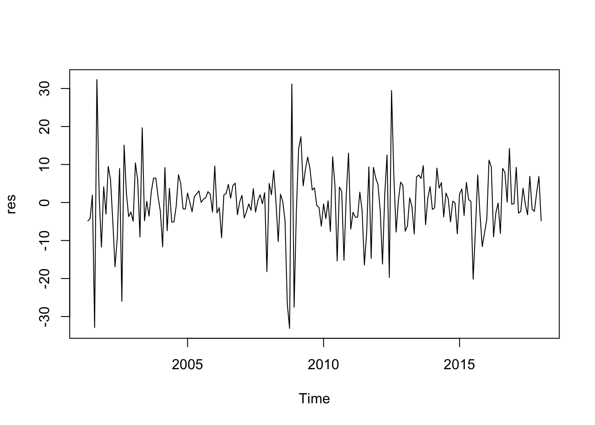
# Histograma de los residuos y comparación con la distribución normal
ehat <- resid(CAPM_SANTANDER)
ebar <- mean(ehat)
sdehat <- sd(ehat)
hist(ehat, col="grey", breaks = 20, freq=FALSE, main="",
ylab="density", xlab="ehat")
curve(dnorm(x, ebar, sdehat), col=2, add=TRUE, ylab="density", xlab="ehat")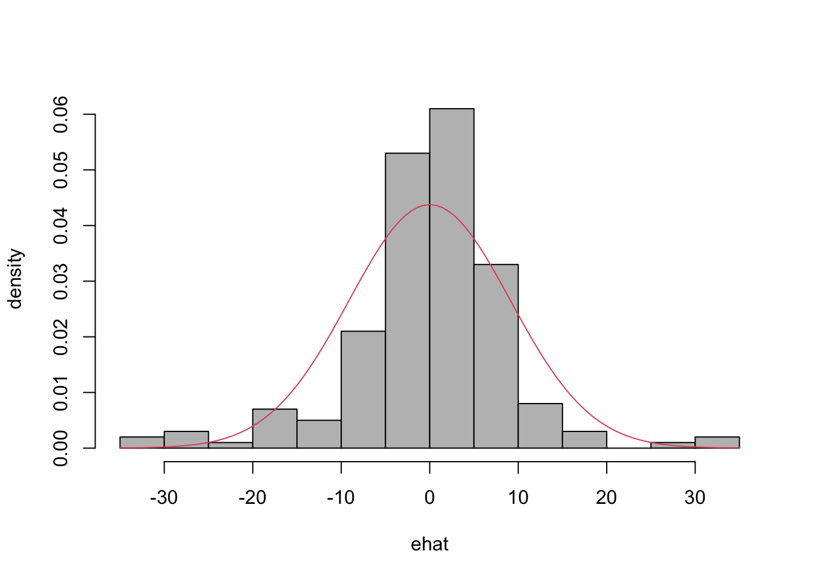
# Contrastes de hipótesis bilaterales
#
# "Valor alfa" del activo: beta1=0 versus beta1≠0
# Estadístico t
alpha <- 0.05 # nivel de significación
b1 <- coef(CAPM_SANTANDER)[[1]] # estimación del parámetro beta1
b1[1] -0.1461435seb1 <- sqrt(vcov(CAPM_SANTANDER)[1,1]) # est. desviación típica beta1
seb1[1] 0.6463839c <- 0
df <- df.residual(CAPM_SANTANDER) # grados de libertad
t_0 <- (b1-c)/seb1 # estadístico t
t_0[1] -0.2260939# Método del valor crítico
t_c <- qt(1-alpha/2, df) # valor crítico
t_c[1] 1.972017# Gráfico de la función de densidad de la distribución t de Student,
# del valor crítico y del estadístico t_0
curve(dt(x, df), -5, 5, ylab=" ", xlab="t")
abline(v=c(-t_c, t_c, t_0), col=c("red", "red", "blue"), lty=c(2,2,3))
legend("topleft", legend=c("-t_c", "t_c", "t_0"),
col=c("red", "red", "blue"), lty=c(2, 2, 3))
# Método del P-valor
p <- 2*(1-pt(abs(t_0), df))
p[1] 0.8213616# Gráfico de la función de densidad de la distribución t y del estadístico t_0
curve(dt(x, df), -5, 5, ylab=" ", xlab="t")
abline(v=c(t_0), col=c("blue"), lty=c(3))
legend("topleft", legend=c("t_0"), col=c("blue"), lty=c(3))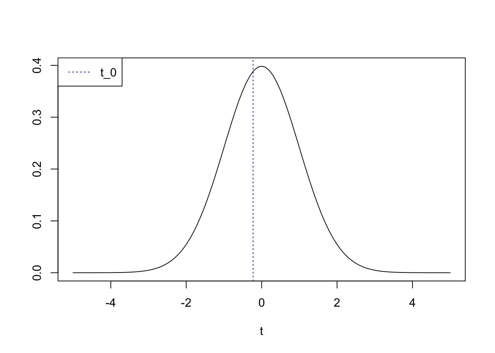
# Estadístico F
library(car)
H_0 <- "(Intercept) = 0"
linearHypothesis(CAPM_SANTANDER, H_0, test="F")Linear hypothesis test
Hypothesis:
(Intercept) = 0
Model 1: restricted model
Model 2: er_SAN ~ er_IBEX
Res.Df RSS Df Sum of Sq F Pr(>F)
1 199 16544
2 198 16540 1 4.2702 0.0511 0.8214# Gráfico de la función de densidad de la distribución F de Fisher-Snedecor,
# del valor crítico y del estadístico F_0
F_0 <- linearHypothesis(CAPM_SANTANDER, H_0, test="F")[2,5] # estadístico F
F_0[1] 0.05111845F_c <- qf(1-alpha, 1, df) # valor crítico
F_c[1] 3.888853curve(df(x, 1, df), 0, 5, ylab=" ", xlab="F")
abline(v=c(F_0,F_c), col=c("blue","red"), lty=c(2,3))
legend("topleft", legend=c("F","Fcr"), col=c("blue","red"), lty=c(2,3))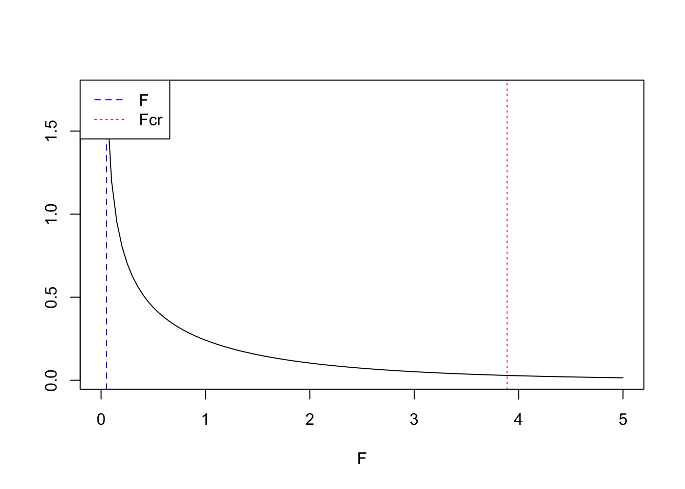
# "Valor beta" del activo: beta2=1 versus beta2≠1
# Estadístico t
alpha <- 0.05 # nivel de significación
b2 <- coef(CAPM_SANTANDER)[[2]] # estimación del parámetro beta2
b2[1] 0.4632261seb2 <- sqrt(vcov(CAPM_SANTANDER)[2,2]) # eest. desviación típica beta2
seb2[1] 0.1016302c <- 1
df <- df.residual(CAPM_SANTANDER) # grados de libertad
t_0 <- (b2-c)/seb2 # estadístico t
t_0[1] -5.281636# Método del valor crítico
t_c <- qt(1-alpha/2, df) # valor crítico
t_c[1] 1.972017# Gráfico de la función de densidad de la distribución t, del valor crítico
# y del estadístico t_0
curve(dt(x, df), -6, 6, ylab=" ", xlab="t")
abline(v=c(-t_c, t_c, t_0), col=c("red", "red", "blue"), lty=c(2,2,3))
legend("topleft", legend=c("-t_c", "t_c", "t_0"),
col=c("red", "red", "blue"), lty=c(2, 2, 3))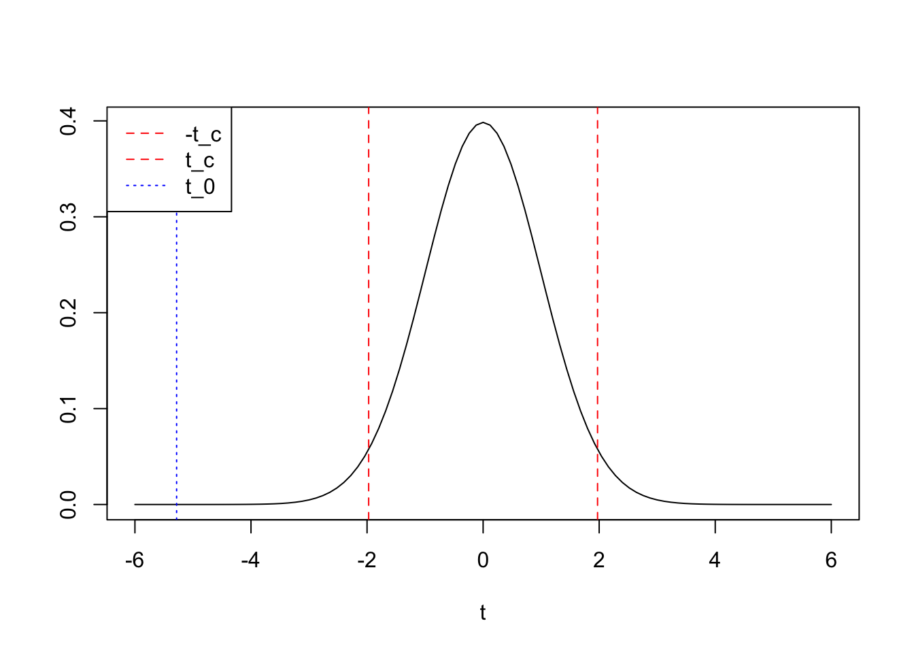
# Método del P-valor
p <- 2*(1-pt(abs(t_0), df))
p[1] 3.357104e-07# Gráfico de la función de densidad de la distribución t y del estadístico t_0
curve(dt(x, df), -6, 6, ylab=" ", xlab="t")
abline(v=c(t_0), col=c("blue"), lty=c(3))
legend("topleft", legend=c("t_0"), col=c("blue"), lty=c(3))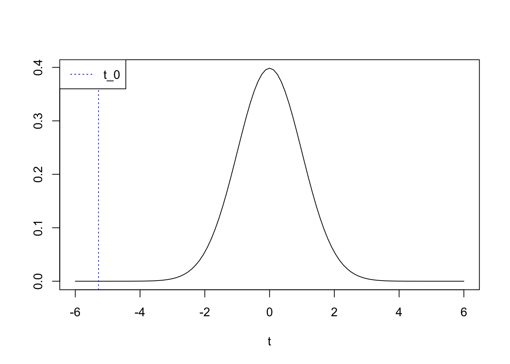
# Estadístico F
H_0 <- "er_IBEX = 1"
linearHypothesis(CAPM_SANTANDER,H_0,test="F")Linear hypothesis test
Hypothesis:
er_IBEX = 1
Model 1: restricted model
Model 2: er_SAN ~ er_IBEX
Res.Df RSS Df Sum of Sq F Pr(>F)
1 199 18870
2 198 16540 1 2330.3 27.896 3.357e-07 ***
---
Signif. codes: 0 '***' 0.001 '**' 0.01 '*' 0.05 '.' 0.1 ' ' 1# Contraste conjunto de la hipótesis beta1=0, beta2=1
H_0 <- c("(Intercept) = 0", "er_IBEX = 1")
linearHypothesis(CAPM_SANTANDER,H_0,test="F")Linear hypothesis test
Hypothesis:
(Intercept) = 0
er_IBEX = 1
Model 1: restricted model
Model 2: er_SAN ~ er_IBEX
Res.Df RSS Df Sum of Sq F Pr(>F)
1 200 18872
2 198 16540 2 2331.7 13.956 2.136e-06 ***
---
Signif. codes: 0 '***' 0.001 '**' 0.01 '*' 0.05 '.' 0.1 ' ' 1# Contrastes unilaterales
#
# ¿Activo defensivo o agresivo?: beta2≤1 versus beta2>1
c <- 1
alpha <- 0.05
t_0 <- (b2-c)/seb2
t_0[1] -5.281636# Método del valor crítico
t_c <- qt(1-alpha, df) # alpha no se divide por 2
t_c[1] 1.652586curve(dt(x, df), -6, 6, ylab=" ", xlab="t")
abline(v=c(t_c, t_0), col=c("red", "blue"), lty=c(2, 3))
legend("topleft", legend=c("t_c", "t_0"), col=c("red", "blue"), lty=c(2, 3))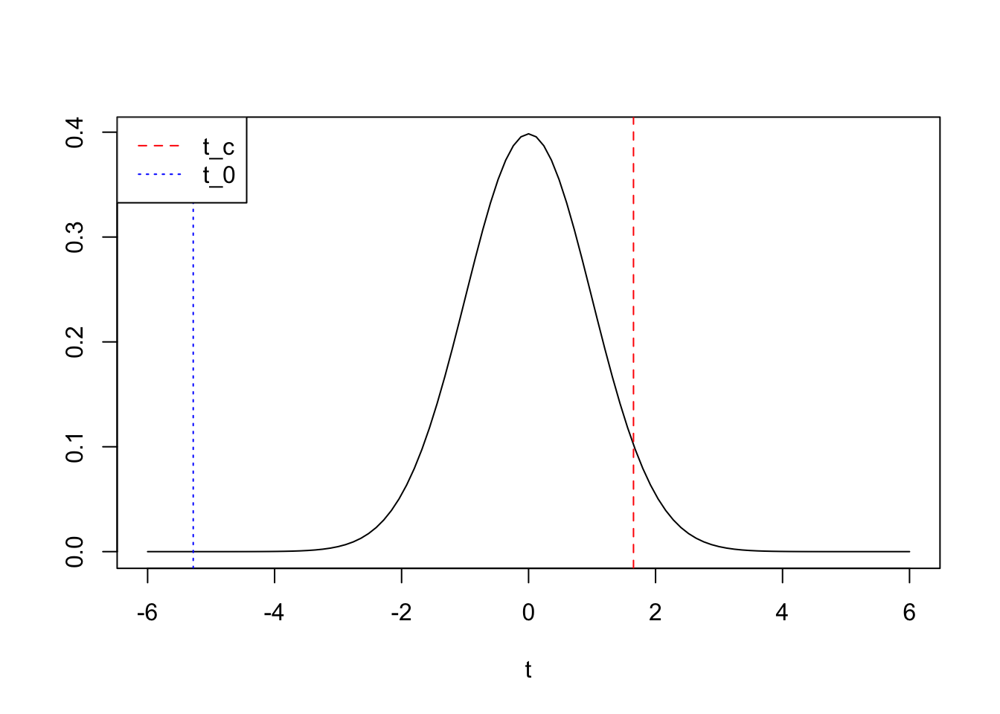
# Método del P-valor
p <- 1-pt(t_0, df)
p[1] 0.9999998# ¿Activo ultra-agresivo?: beta2≥2 versus beta2<2
c <- 2
alpha <- 0.05
t_0 <- (b2-c)/seb2
t_0[1] -15.12123# Método del valor crítico
t_c <- qt(alpha, df) # alpha no se divide por 2
t_c[1] -1.652586curve(dt(x, df), -20, 20, ylab=" ", xlab="t")
abline(v=c(t_c, t_0), col=c("red", "blue"), lty=c(2, 3))
legend("topleft", legend=c("t_c", "t_0"), col=c("red", "blue"), lty=c(2, 3))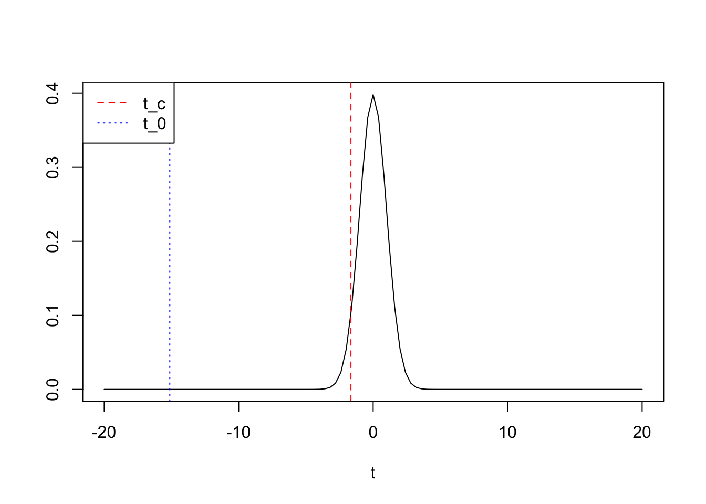
# Método del P-valor
p <- pt(t_0, df)
p[1] 3.786304e-35# NOTA:
# Distribuciones de probabilidad en R ->
# https://rstudio.github.io/r-manuals/r-intro/Probability-distributions.htmlCódigo Python
# Lectura de librerías
import numpy as np
import pandas as pd
import matplotlib.pyplot as plt
import statsmodels.api as sm
import statsmodels.formula.api as smf
# Librería SciPy (stats): https://docs.scipy.org/doc/scipy/tutorial/stats.html
import scipy as sp
# Lectura de datos
CAPM_ESP = pd.read_csv('data/CAPM_ESP.csv', delimiter=';',
parse_dates=['date'], index_col='date')
CAPM_ESP.head() P_INDITEX P_SANTANDER P_TELEFONICA P_IBEX35 R_LT1Y
date
2001-05-22 2.940 6.5528 14.1485 9542.7 4.54
2001-06-22 3.746 6.2643 11.4884 9601.8 4.25
2001-07-22 3.610 5.7639 10.4938 8787.6 4.12
2001-08-22 3.860 5.8110 9.8076 8564.7 4.09
2001-09-22 3.060 4.0801 8.6741 8117.3 3.84CAPM_ESP.tail() P_INDITEX P_SANTANDER P_TELEFONICA P_IBEX35 R_LT1Y
date
2017-09-22 31.905 5.6989 9.047 10179.8 -0.37
2017-10-22 30.990 5.6000 8.864 10214.7 -0.35
2017-11-22 29.280 5.4970 8.497 10357.8 -0.38
2017-12-22 29.615 5.5940 8.255 10211.3 -0.37
2018-01-22 28.720 6.0340 8.417 10411.4 -0.48# Transformación de variables
def LogDiff(x):
x_diff = 100*np.log(x/x.shift(1))
return x_diff
CAPM_ESP['r_IBEX'] = LogDiff(CAPM_ESP['P_IBEX35'])
CAPM_ESP['r_SAN'] = LogDiff(CAPM_ESP['P_SANTANDER'])
CAPM_ESP['r_LT1Y'] = CAPM_ESP['R_LT1Y']/12
CAPM_ESP['er_IBEX'] = LogDiff(CAPM_ESP['P_IBEX35']) - CAPM_ESP['R_LT1Y']/12
CAPM_ESP['er_SAN'] = LogDiff(CAPM_ESP['P_SANTANDER']) - CAPM_ESP['R_LT1Y']/12
# Gráficas de las variables del modelo
plt.figure(1)
plt.plot(CAPM_ESP['er_IBEX'], label='Exceso de rendimiento IBEX35')
plt.plot(CAPM_ESP['er_SAN'], label='Exceso de rendimiento Banco Santander')
plt.xlabel('Date')
plt.ylabel('%')
plt.title('Variables del modelo CAPM para el Banco Santander')
plt.legend()
plt.show()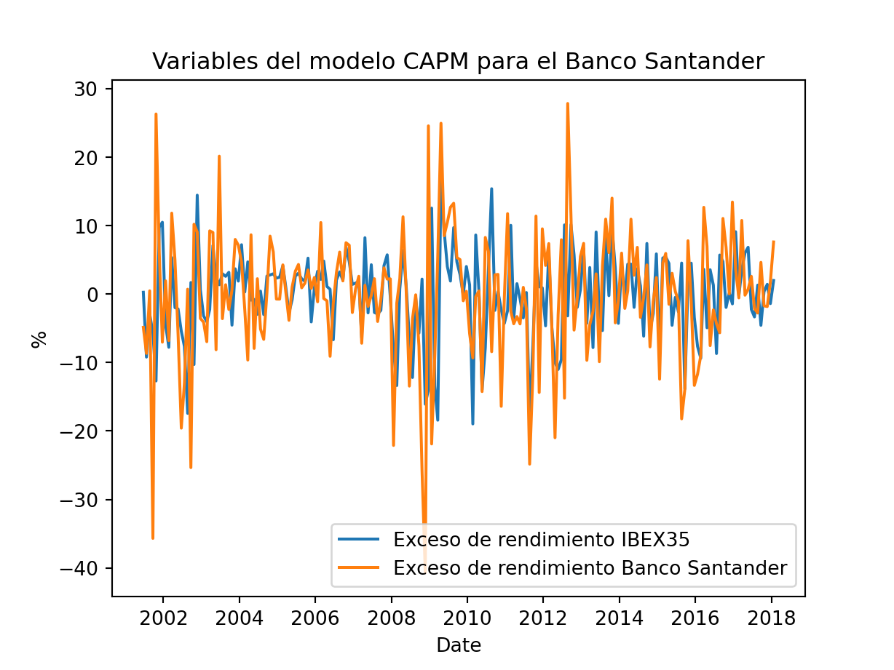
# Diagrama de puntos asociado a la regresión
plt.figure(2)
plt.scatter(CAPM_ESP['er_IBEX'], CAPM_ESP['er_SAN'])
plt.xlabel('er_IBEX')
plt.ylabel('er_SAN')
plt.title('Exceso de rendimiento de SAN frente a IBEX')
plt.show()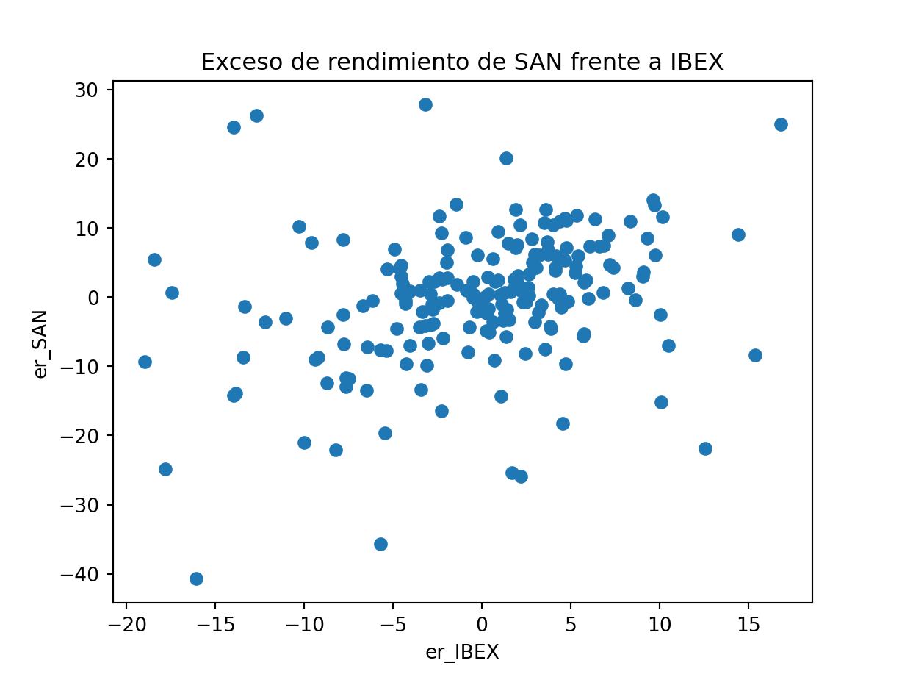
# Modelo CAPM para las acciones del Banco Santander
formula = 'er_SAN ~ er_IBEX'
CAPM_SANTANDER = smf.ols(formula, CAPM_ESP).fit()
print(CAPM_SANTANDER.summary()) OLS Regression Results
==============================================================================
Dep. Variable: er_SAN R-squared: 0.095
Model: OLS Adj. R-squared: 0.090
Method: Least Squares F-statistic: 20.77
Date: Tue, 14 Nov 2023 Prob (F-statistic): 9.03e-06
Time: 20:29:36 Log-Likelihood: -725.31
No. Observations: 200 AIC: 1455.
Df Residuals: 198 BIC: 1461.
Df Model: 1
Covariance Type: nonrobust
==============================================================================
coef std err t P>|t| [0.025 0.975]
------------------------------------------------------------------------------
Intercept -0.1461 0.646 -0.226 0.821 -1.421 1.129
er_IBEX 0.4632 0.102 4.558 0.000 0.263 0.664
==============================================================================
Omnibus: 23.804 Durbin-Watson: 2.378
Prob(Omnibus): 0.000 Jarque-Bera (JB): 82.551
Skew: -0.352 Prob(JB): 1.19e-18
Kurtosis: 6.068 Cond. No. 6.36
==============================================================================
Notes:
[1] Standard Errors assume that the covariance matrix of the errors is correctly specified.# Intervalos de confianza para los parámetros estructurales del modelo
# Automático
CAPM_SANTANDER.conf_int() 0 1
Intercept -1.420824 1.128537
er_IBEX 0.262809 0.663643# Manualmente
t_c = np.array(sp.stats.t.interval(0.95,CAPM_SANTANDER.df_resid))
CAPM_SANTANDER.params[0]+CAPM_SANTANDER.bse[0]*t_carray([-1.42082387, 1.12853695])CAPM_SANTANDER.params[1]+CAPM_SANTANDER.bse[1]*t_carray([0.26280949, 0.66364269])# ANOVA
sm.stats.anova_lm(CAPM_SANTANDER) df sum_sq mean_sq F PR(>F)
er_IBEX 1.0 1735.445734 1735.445734 20.774958 0.000009
Residual 198.0 16540.021306 83.535461 NaN NaN# Ajuste del modelo (R^2)
CAPM_SANTANDER.rsquared0.09496040403004358# Estadístico F de significación global
CAPM_SANTANDER.fvalue, CAPM_SANTANDER.f_pvalue(20.774958445655425, 9.0300657558589e-06)# Estadístico F y R^2
F_0 = (CAPM_SANTANDER.rsquared/(CAPM_SANTANDER.df_model))/((1-CAPM_SANTANDER.rsquared)/(CAPM_SANTANDER.df_resid))
F_0, 1-sp.stats.f.cdf(F_0, CAPM_SANTANDER.df_model, CAPM_SANTANDER.df_resid)(20.774958445655436, 9.030065755810668e-06)# Número de obsevaciones
CAPM_SANTANDER.nobs200.0# Número de parámetros
1+CAPM_SANTANDER.df_model2.0# Errores estimados (residuos) del modelo
plt.figure(3)
plt.plot(CAPM_SANTANDER.resid, label='res')
plt.xlabel('Date')
plt.title('Residuos del modelo CAPM para el Banco Santander')
plt.legend()
plt.show()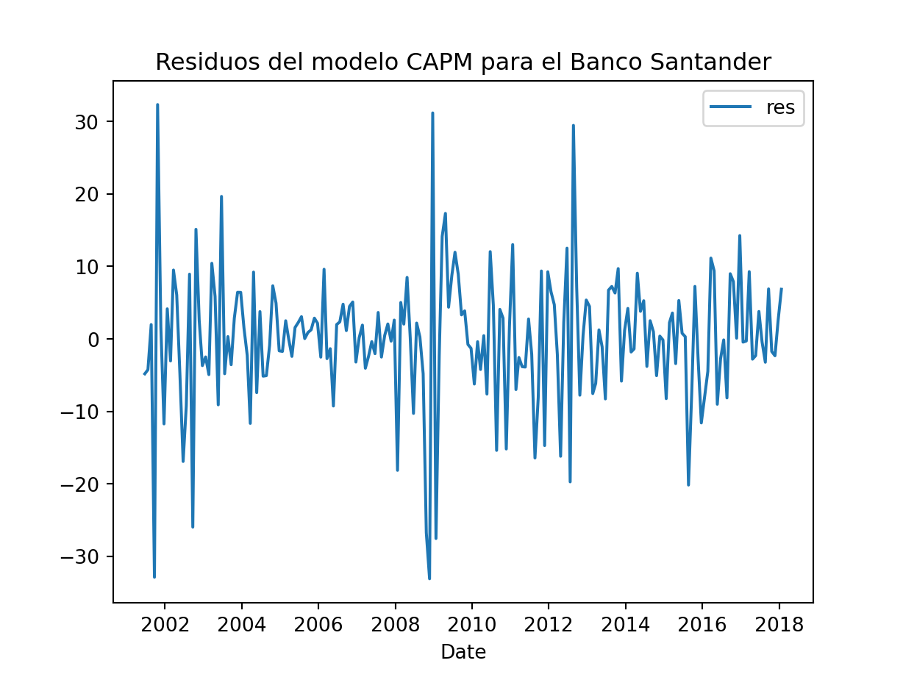
# Histograma de los residuos y comparación con la distribución normal
ebar = np.mean(CAPM_SANTANDER.resid)
sdehat = np.std(CAPM_SANTANDER.resid)
plt.figure(4)
fig, ax = plt.subplots()
ax.hist(CAPM_SANTANDER.resid, bins=20, density=True,
edgecolor='white', linewidth=1.2)
x = np.linspace(min(CAPM_SANTANDER.resid), max(CAPM_SANTANDER.resid), 100)
ax.plot(x, sp.stats.norm.pdf(x, ebar, sdehat), color='black',
label = 'Distribución normal')
plt.title('Residuos del modelo CAPM para el Banco Santander')
plt.xlabel('Residuos')
plt.ylabel('Densidad')
plt.legend(loc='best')
plt.tight_layout()
plt.show()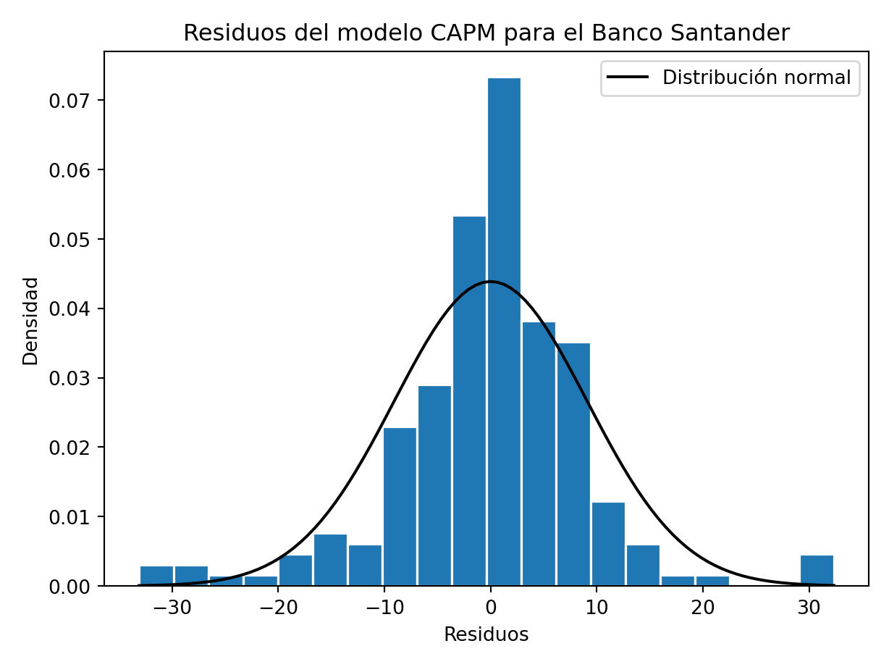
# Contrastes de hipótesis bilaterales
# beta1=0 versus beta1≠0
# Estadístico t
t_stat = (CAPM_SANTANDER.params['Intercept']-0)/CAPM_SANTANDER.bse['Intercept']
t_stat, 2*sp.stats.t.cdf(t_stat, CAPM_SANTANDER.df_resid)(-0.22609389919232573, 0.8213616110920402)# Estadístico F y P-valor
H_0 = 'Intercept = 0'
F_0 = CAPM_SANTANDER.f_test(H_0)
print(F_0)<F test: F=0.05111845125198955, p=0.8213616110920228, df_denom=198, df_num=1># beta2=1 versus beta2≠1
# Estadístico t y P-valor
t_0 = (CAPM_SANTANDER.params['er_IBEX']-1)/CAPM_SANTANDER.bse['er_IBEX']
t_0, 2*(1-sp.stats.t.cdf(abs(t_0), CAPM_SANTANDER.df_resid))(-5.281635967748109, 3.3571043878133366e-07)# Estadístico F y P-valor
H_0 = 'er_IBEX = 1'
F_0 = CAPM_SANTANDER.f_test(H_0)
print(F_0)<F test: F=27.895678495810504, p=3.357104388598483e-07, df_denom=198, df_num=1># Contraste conjunto de la hipótesis beta1=0, beta2=1
# Estadístico F y P-valor
H_0 = 'Intercept = 0 , er_IBEX = 1'
F_0 = CAPM_SANTANDER.f_test(H_0)
print(F_0)<F test: F=13.956448346309095, p=2.1364485558886642e-06, df_denom=198, df_num=2># Contrastes unilaterales
# beta2≤1 versus beta2>1
# Estadístico t y P-valor
t_0 = (CAPM_SANTANDER.params['er_IBEX']-1)/CAPM_SANTANDER.bse['er_IBEX']
t_0, 1-sp.stats.t.cdf(t_0, CAPM_SANTANDER.df_resid)(-5.281635967748109, 0.9999998321447806)# beta2≥2 versus beta2<2
# Estadístico t y P-valor
t_0 = (CAPM_SANTANDER.params['er_IBEX']-2)/CAPM_SANTANDER.bse['er_IBEX']
t_0, sp.stats.t.cdf(t_0, CAPM_SANTANDER.df_resid)(-15.121227447088602, 3.786304271337718e-35)# NOTA:
# Distribuciones de probabilidad en Python (librería SciPy) ->
# https://docs.scipy.org/doc/scipy/reference/stats.html